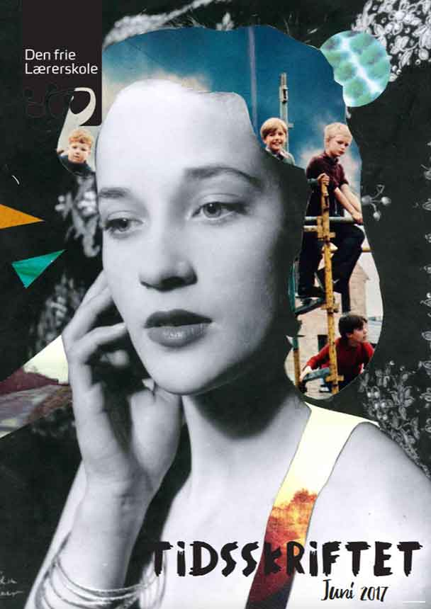
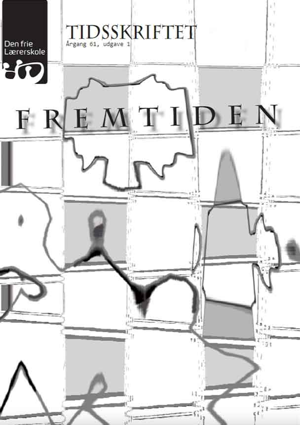
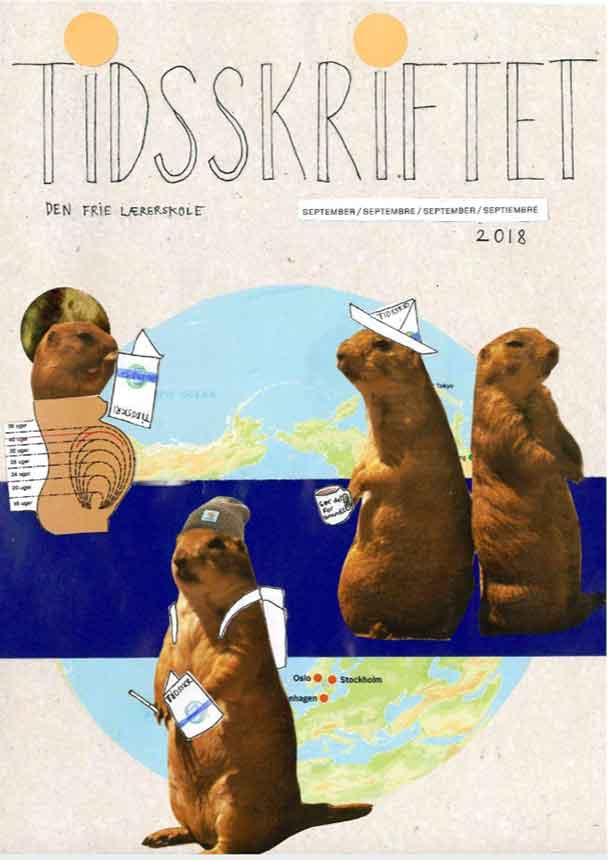

Tidsskriftet
Skoleblad for Den frie Lærerskole
Under min uddannelse til lærer for de frie skoler på Den Frie Lærerskole varetog jeg rollen som formand for skolebladet Tidsskriftet. Et blad, der agerer platform for studerendes tanker og holdninger. Et skriftligt møderum, hvor der blev inspireret, samtalet og diskuteret.

Forside til publikation

Forside til publikation
